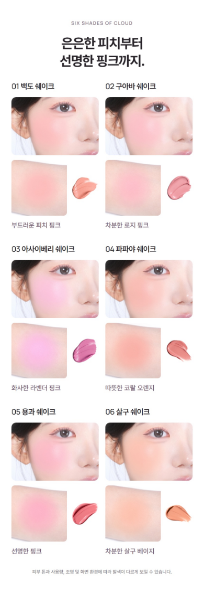

2026.10.20 · 사용자 수정 방향 반영 · CAFE24 등록 구성
색상명은 한 번.
발색은 한곳에서.
손목과 볼을 별도 구간으로 나누던 구성을 제거했습니다. 한 색의 볼·손목·제형을 같은 칸에 묶고, 여섯 색을 하나의 발색표로 정리했습니다.

이번 수정 범위
같은 6색을 두 번 보여주던 구조를 한 번으로 통합했습니다. 볼 사진의 크기와 구도는 유지했고, 손목과 제형은 같은 색의 보조 사진으로 묶었습니다. 모바일 390px 기준 발색 구간은 1,834px에서 1,130px로 38.4% 줄었습니다.
사진 원본의 색, 제품·제형 설명, GIF, 원료·엔딩 구간, 제품정보·전성분은 유지했습니다. 손목 사진의 개별 크기는 작아졌으므로 기존 대형 비교와 같은 세부 관찰 크기는 아닙니다.
클로드 비교 검토에서 반복 구조 해소와 320·390px 가독성을 확인했습니다. 실제 등록 파일은 320·390·860px에서 이미지·가로 넘침·ZIP 검사까지 확인했습니다. 실제 카페24 업로드와 기기 검증은 아직 진행하지 않았습니다.
수정 전의 반복 구간
아래 구성은 사용자가 거절한 이전 안입니다.

검토 기록
## 판정: 반복 문제는 해결됐습니다. 이미지만 보면 내보내기 전에 꼭 고칠 것은 없습니다 **반복이 없어졌다고 보는 이유** - 색상 이름 6개가 각 칸 맨 위에 한 번씩만 나옵니다. 이전 판(final-colours-390)은 「손목 발색 비교」와 「볼 위의 발색」 두 구간에서 01~06 이름을 한 번씩 더 보여줬습니다. 이번 판에는 이 두 소제목이 없어져서 같은 순서가 두 번 나오는 일이 없습니다. - 색 설명 문구(부드러운 피치 핑크 등)도 칸마다 한 번씩만 있습니다. - 한 칸이 위에서부터 이름 → 볼 사진 → 손목+제형 → 색 설명 순서라서 한 색의 자료가 한곳에 모여 있습니다. 칸끼리 사이 간격도 충분해서 설명 문구가 다음 칸 이름에 붙어 보이지 않습니다. - 높이가 1834px에서 1130px로 줄어서 6색을 비교하려고 위아래로 오가는 거리가 짧아졌습니다. **320/390 화면에서 사진이 보이는지** - 볼 사진: 이전 판과 크기와 잘린 범위가 같아 보이고, 320에서도 볼 색이 서로 구분됩니다. - 손목 사진: 이전 판보다 작아졌습니다. 390에서는 약 105px, 320에서는 약 85px로 보입니다. 그래도 6색 모두 색 차이는 보입니다. 다만 01 백도와 06 살구처럼 비슷한 색끼리는 작은 크기에서 차이가 약하게 보입니다. 이건 원래 색이 비슷해서이기도 하고, 사진이 작아진 영향도 있습니다. - 제형 사진: 320에서는 지름 약 40px 정도지만 색과 광은 알아볼 수 있습니다. - 맨 아래 안내 문구(피부 톤과 사용량…)는 320에서 매우 작습니다. 이전 판과 같은 크기라서 새로 생긴 문제는 아닙니다. **꼭 고칠 것:** 없음 **선택 사항(꼭 할 필요 없음)** 1. 손목 사진 오른쪽에 빈 공간이 남아 칸이 왼쪽으로 쏠려 보입니다. 제형 사진을 세로 가운데에 맞추는 정도면 충분합니다. 2. 영문 이름(WHITE PEACH SHAKE 등)이 이번 판에서 빠졌습니다. 일부러 뺀 것인지만 확인해 주세요. **확인하지 못한 것** - 실제 카페24 화면이나 기기별 화면 밝기·색 표현은 보지 않았습니다. PNG 3장만 봤습니다. - 손목 사진이 원본과 같은 범위로 잘렸는지는 원본 파일과 대조하지 않았습니다. - 고객 반응이나 판매에 미치는 영향은 판단할 수 없습니다. - 이 의견은 모델 검토일 뿐이고 사용자 승인을 대신하지 않습니다.